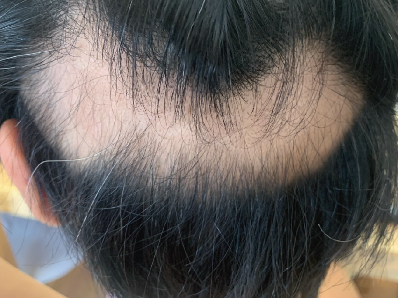

退院&通院 脱毛

手術から約3週間後、無事退院することができました。抗がん剤（お薬のタイプ）と放射線治療は継続ですが、それらのためだけに入院している必要はないだろうという判断でした。６月下旬から７月下旬までの約１ヶ月間、平日は毎日放射線治療を受けるため通院しました。介護休暇を取ってくれた母と「今日のランチは何にしようか」と話しながら、ある意味優雅な毎日だったと思います。
放射線治療は最初こそ恐れ慄いたものの、数分で終わること、無痛であることからリラックスして受けられました。後半は慣れてお昼寝の時間になっていました。腫瘍自体は綺麗に取り除かれているので、目に見えない細胞レベルのガンをめがけて放射線を打つという話で、再発・転移防止に効果があるといいなあと思います。
そのうち髪の毛が抜け始めましたが、抜けた部分は放射線を当てた場所のみ。部分的にハゲましたが、帽子をかぶってしまえばわかりません。放射線が終わったらまたすぐ生えてきて安心しました。てっきり全部抜けると思って覚悟していたのですが、杞憂でした。髪のない頭皮は想像以上に柔らかく面白く、よく触って遊んでいて、家族に怒られるなどしました。彼もどんな髪型でも気にしないと言ってくれ、周囲の支えがあって明るく乗り越えられたと思います。良い経験ができました。